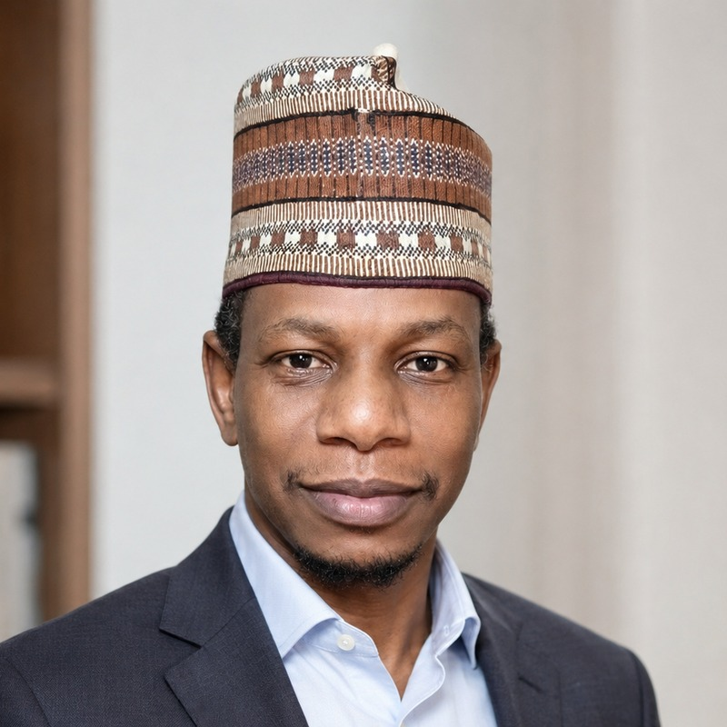

Welcome
Hassan Mohammad
I work on the design, convergence analysis, and complexity analysis of numerical optimization algorithms — conjugate gradient methods, quasi-Newton and Hessian-free methods, and derivative-free projection methods — for unconstrained optimization, nonlinear least-squares, and nonlinear monotone equations.
My research interests are numerical optimization and its applications, numerical linear algebra, and numerical analysis, with recurring applications in signal and image recovery and robotic motion control. I'm also increasingly interested in how these classical convergence principles carry over to the learning dynamics of large-scale neural networks.
I earned my PhD in Mathematics (2014–2019) at Bayero University Kano under the supervision of Professor Mohammed Yusuf Waziri, with Professor Sandra Augusta Santos (UNICAMP, Brazil) as co-advisor — part of that work was carried out during a TETFUND PhD Sandwich Fellowship at UNICAMP (2017–2018) and a CIIT–TWAS Sandwich Fellowship at COMSATS University Islamabad (2018). I hold an MSc (2012–2014) and BSc (2004–2009) in Mathematics, also from Bayero University Kano, and joined the department as a Graduate Assistant in 2012.
I currently serve as a referee for numerous journals in numerical analysis and optimization, including the Journal of Computational and Applied Mathematics, Numerical Algorithms, Optimization Methods and Software, and IEEE Access, and as Early Career Editorial Board Member for Franklin Open. I also create short-form mathematics and AI education content — including Hausa-language material for students in northern Nigeria — under the handle @hameefy.
See Publications for the full paper list, People for students I supervise, or get in touch via Contact.